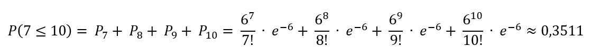

Предметная область и концептуальное описание
За основу проекта была взята частная клиника. В ней работает только один врач-венеролог, который осматривает пациентов на предмет венерических заболеваний и прописывает лечение.
Среднее число пациентов, проходящих осмотр врача в течение часа, равно 3. Найти вероятность того, что за 2 часа врач осмотрит от 7 до 10 пациентов.
Физическое описание законов, по которым живет система
Предполагая поток простым, используем формулу Пуассона:

Распределе́ние Пуассо́на — распределение дискретного типа случайной величины, представляющей собой число событий, произошедших за фиксированное время, при условии, что данные события происходят с некоторой фиксированной средней интенсивностью и независимо друг от друга.
Распределение Пуассона играет ключевую роль в теории массового обслуживания.
Математическое описание
Вычислим – среднее количество пациентов, проходящих осмотр врача, в течение 2 часов.
λ = 2 * 3 = 6
По теореме сложения вероятностей несовместных событий:
– вероятность того, что за 2 часа врач осмотрит от 7 до 10 больных
Модель
Врач ещё не смотрел больных
(осмотренные больные исчезают из очереди)


Вывод
В среднем за 2 часа врач успеет осмотреть 6 пациентов, но есть вероятность 0.35, что он сможет осмотреть больее 6 пациентов, но не менее 11. На этот показатель влияют многие факторы, например стадия заболевания у пациента, его пол, возраст и прочие факторы. Также с другой стороны это может зависить напрямую и от врача. Если он не выспался, работал без выходных - он будет менее продуктивным и не сможет принять более 6-ти пациентов.